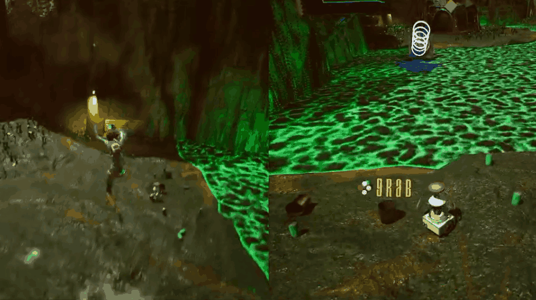

Projects
2D Survival-Sandbox
 View on Github
View on Github
This project was made using C# and a wrapper for the famous and originally C-based game-framework called Raylib. It is a hobby project that I have worked on since june 2025.
Competencies
- C#
- Object Oriented Programming
- Entity Component System
- Graphics Frameworks (Raylib)
- Composition-based Architecture
SDL & C++ 2D Game Engine
 View on Github
View on Github
This project was made using C++ and the low-level game-framework SDL3. It was made as part of a course in C and C++ that lasted for 2 months, but the engine was developed from january-march 2026.
Competencies
- C++
- Object Oriented Programming
- Entity Component System
- Low-Level-Programming
- Memory-Management
- Graphics Frameworks (SDL3)
Battle for the Board
 Private Github Repository
Private Github Repository
This project was made using C# and Unity. It was a collaborative project where 6 people worked together to create a mobile video game for Google Play.
Competencies
- C#
- Object Oriented Programming
- Github
- Unity
- Teamwork
Planet Red

Github ProjectThis project was made using C++ and Unreal Engine. It was a collaborative project where 9 people worked together to create a couch-coop game.
Competencies
- C++
- Component Based Architecture
- Github
- Unreal Engine